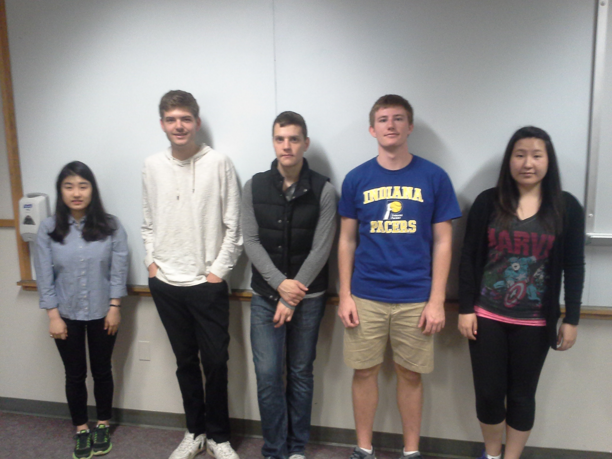
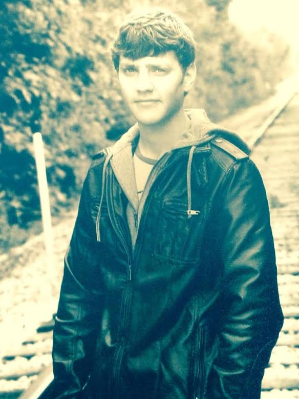

Problem statement
Group member names- Conner Stevens, Eric Counsel, Bennett Dierckman, Ahijin Kim, Enguunee Byambadorj
Our Problem- The shortage of clean water in Sudan and South Sudan.
Explanation of problem-This is a problem because the people living in Sudan and South Sudan, particularly those living in Abyei, are unable to find clean, drinkable water without extreme difficulty. The terrain, climate, pollution, and current political tension and conflicts in the area all contribute to increased difficulty for the citizens residing in these regions.
Process for choosing problem-
Our process for choosing our problem was quite simple. We needed a large problem that was affecting a small area. We also wanted the problem to have a hypothetical solution that involved technology, but most people wouldn’t necessarily think to apply technology for a solution. Once we had our general requirements for the problem, we thought about problems that are commonly discussed in today’s society. Water came up, and we decided to go with water shortages. Once we had that, we simply researched regions that are currently suffering from water shortages and came across the South Sudan and Sudan.
Basic Information
Our basic problem is that in South Sudan, particularly in Abyei, a region in the northern part of South Sudan, the citizens are dying from dehydration or sickness due to the lack of clean water. Various political issues are also causing this region to be dangerous because it is right on the border of Sudan and South Sudan.

I101 Group Project